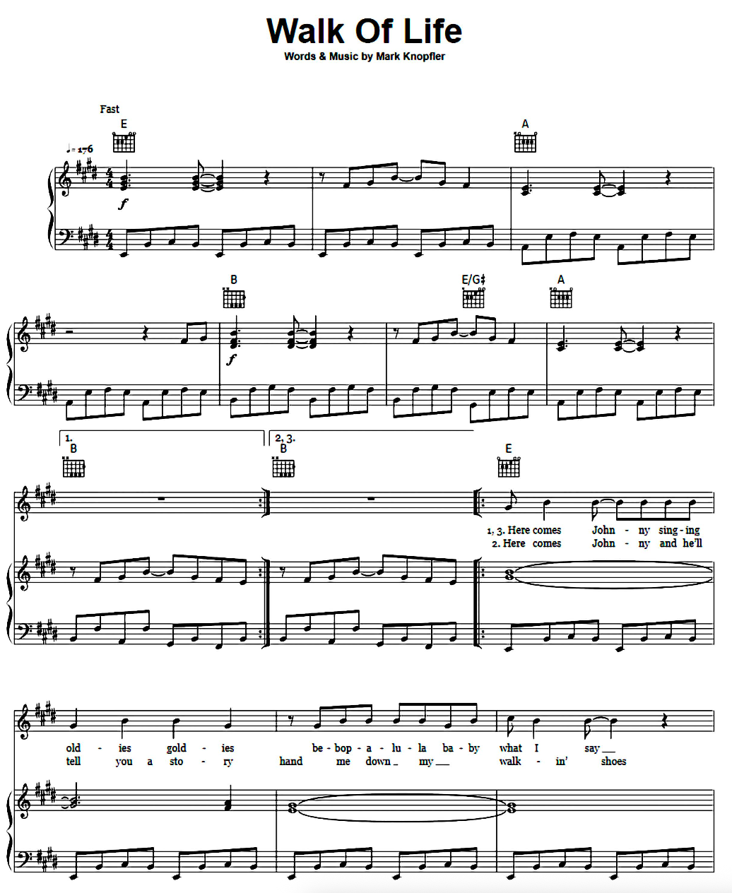
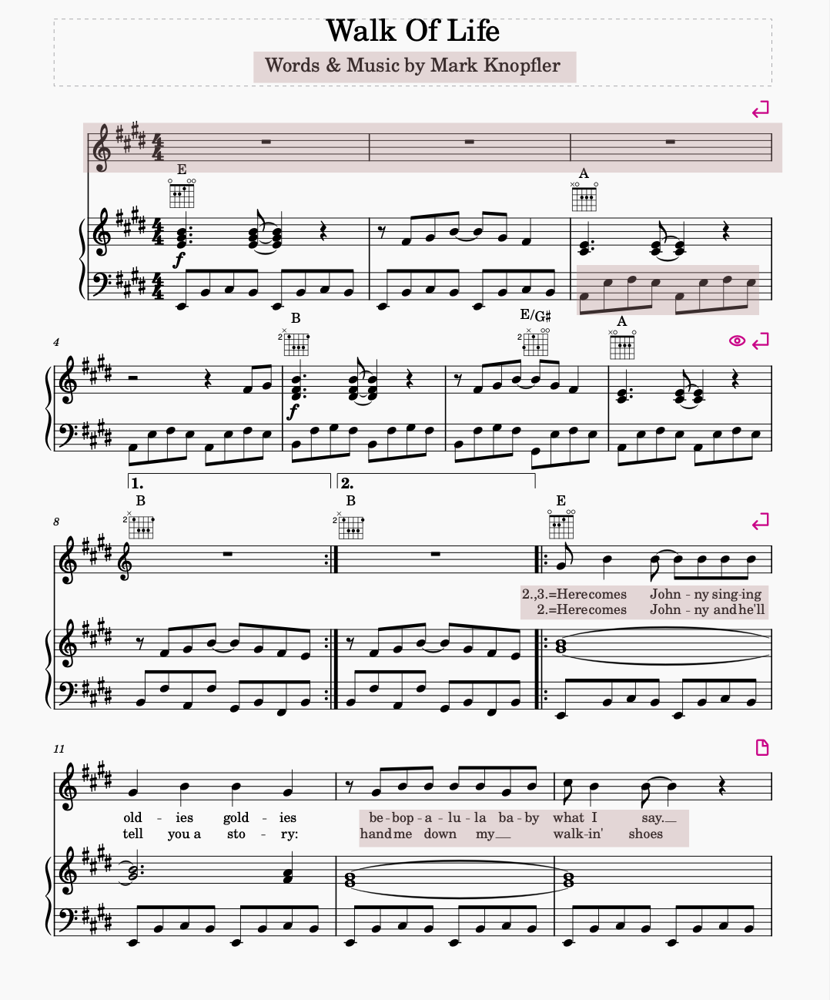

Week 2 Notation Basics
Task 1: Comparing Two Music Notations
For Week 2, I’ve chosen to analyse Walk of Life by Mark Knopfler. The score can be found here: Walk of Life Sheet Music (Dire Straits).
Image Comparison
When transcribing my PDF to MuseScore via the OMR engine, although the majority of the notes were correct, I found multiple errors. Below are screenshots of the original PDF and the one I transcribed, I’ve highlighted the parts that I’ve had to change:
- Lyrics Error:
- The phrase “Here comes Johnny…” was incorrectly transcribed as “New comes…” in MuseScore.
- Corrected the text and re-aligned each syllable to match the corresponding notes in the melody.
- Lyric Spacing Adjustment:
- The spacing between lyrics was uneven in the MuseScore version.
- Structural Issue – Extra Bar:
- An extra empty bar appeared at the top of the MuseScore file.
- Chose not to remove it due to uncertainty about its effect on the overall score structure.
- This demonstrates how optical music recognition (OMR) and digital transcription can introduce structural inconsistencies that require manual correction.
- Stem Direction Error:
- In one passage, note stems were incorrectly oriented (upward instead of downward).
- So I adjusted stem directions to match the original printed notation.

Figure 1: Original PDF Notation

Figure 2: MuseScore Transcription